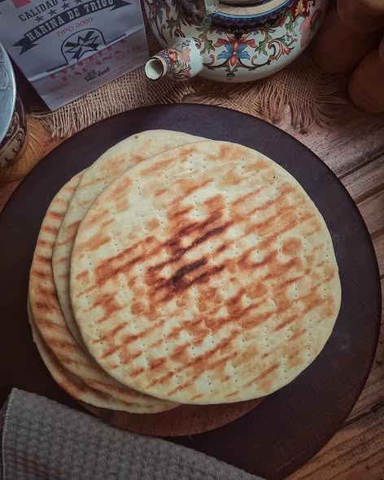

Home
Receta de torta asada

Sobre esta receta:
No hay domingo completo (o tarde de lluvia) sin una buena torta asada al lado del mate.
También conocida en muchas regiones como torta parrillera,
este pan plano y criollo se destaca por su corteza crocante,
su miga tierna y ese saborcito ahumado inconfundible que solo el fuego sabe darle.
Ingredientes y preparacion
Ingredientes para 4 tortas asadas
- 250g de harina comun
- 50g de grasa de vaca
- 100ml de agua natural
- 1 cucharada sopera de sal
Preparacion paso a paso:
-
Poner la harina en un bowl, colocar en el centro la grasa derretida y tibia.
Preparar una salmuera agregando la sal al agua, ir probando hasta que quede a gusto.
Agregar a la harina y mezclar, formando una masa. Amasar unos minutos hasta que este suave y lisa.
-
Estirar de 1 o 2 cm de espesor, pincharla con un tenedor.
Cocinarla a la parrilla con poquitas brasas entre 15 minutos de cada lado, aproximadamente.